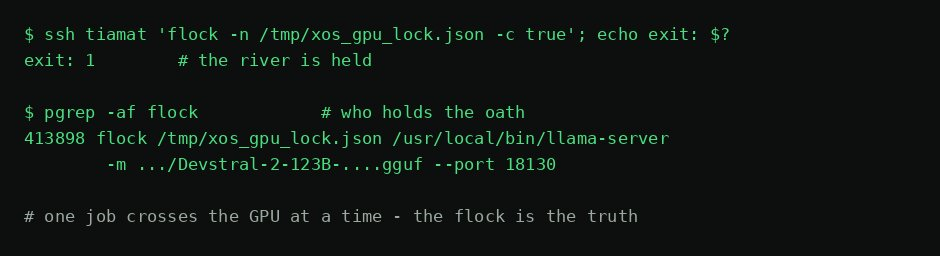

STYX
The Styx is the river every soul must cross one at a time, and an oath sworn on it binds even a god. The GPU lease is that oath: while one holder has it, nobody else crosses. All GPU work on Tiamat serializes through this one crossing.
The canonical lock file is
DEFAULT_LOCK_FILE = /tmp/xos_gpu_lock.json (override:
$XOS_GPU_LOCK_FILE). The flock IS the truth — never
parse the label file. The JSON body is a best-effort display
label written after the lock is held; check busy with a
non-blocking flock attempt
(flock -n /tmp/xos_gpu_lock.json -c true), never with
cat.
The oath. One job crosses the GPU at a time.

Styx — Crate Manual
Quickstart
# Cargo.toml
[dependencies]
styx = { path = "../Styx" }The central type is styx::Lease — an exclusive claim on
the GPU, held for as long as the value lives:
use styx::{Endpoint, Lease, ensure_model, run};
let lease = Lease::acquire("hephaestus")?; // flock, non-blocking: busy = Err
let ep = Endpoint::default(); // Nemotron shim on 10.0.0.2:18205
ensure_model(&ep, &lease)?; // wake a cold model, wait it out
let answer = run(&ep, "prompt", Some(&lease))?; // one completion under the lease
// drop(lease) → the kernel releases the lockWhat it is
The only way anything in the Leviathan Design Suite touches the GPU.
Three things, never more: an Endpoint, a borrowable
Lease, and ensure_model. The lock is
flock(2) — kernel-arbitrated, so there is no check-then-act
race, and the kernel releases it when the process dies. That is why
there is no timeout, no zombie recovery, no PID staleness check.
Sovereign, local-first; PolyForm Small Business licensed.
API surface
Lease::acquire(holder) -> Result<Lease, String>—flock(LOCK_EX | LOCK_NB); fails immediately if held. No retry, no wait: a busy GPU is an answer, not an error to paper over.holder()returns the name;Dropclears the label and the kernel releases the lock.Endpoint— base_url / model / systemd unit / swapmech URL.Endpoint::default()= Nemotron-3 Super via the shim (:18205, swap:18206). Not:18081— the Spine gateway is dead.ensure_model(&Endpoint, &Lease)— takes&Leaseso the type system makes swapping the resident model without the GPU impossible; readiness wait against a hard 180 s deadline, then fail loud.run(&Endpoint, prompt, Option<&Lease>)— one completion.Some(lease)borrows the caller's claim;Noneacquires one for the call. Setsenable_thinking: false(required by the nemotron shim).lock_path()/current_label()— path resolution and the display-only label read.
Consumers
Every GPU job in the fleet: Morpheus renders, GilgaMESH mesh
generation, HADES-kept resident models, Oannes/cgen completions, and any
bash/python lane via the same primitive
(flock /tmp/xos_gpu_lock.json -c '…',
fcntl.flock). Same file, same kernel lock, no protocol to
conform to.
Known limits
ureqis pulled with default features, which drags in an unused TLS stack for plain-HTTP LAN calls — open finding.- Admission test for new code: would a module that never talks to the GPU machine still need it? Printer profiles fail it. Keep it three things.
ensure_modelneeds the swapmech admin token (~/.config/spine/admin-tokenor$XOS_ADMIN_TOKEN_FILE); without it the call fails loud, by design.